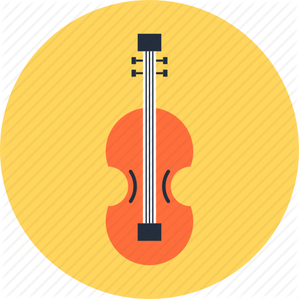

Retail

I've been a retail cashier for a few years.
Being a cashier, I was able to learn customer service, communication, and teamwork.
Freelance
I am a freelance violin teacher, and social media manager.
I've learned a lot of skills freelancing including graphic design, copywriting, and online marketing. I am looking forward to learning the soft skills to become a front-end developer along with the technical skills.